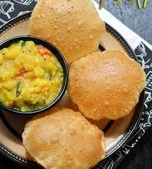

Poori

Description about poori
It is also a dish served during breakfast but unlike others it is deep fried wheat flouar you can say
mostly in sunflower oilit contains lot of calorie
Ingredients
- wheat flouar
- sunflower oil
- big pan
steps to make the recepie
- pour the oil in big pan
- let the oil boil
- place the smashed flouar in oil
- once they are ready take them and serve them